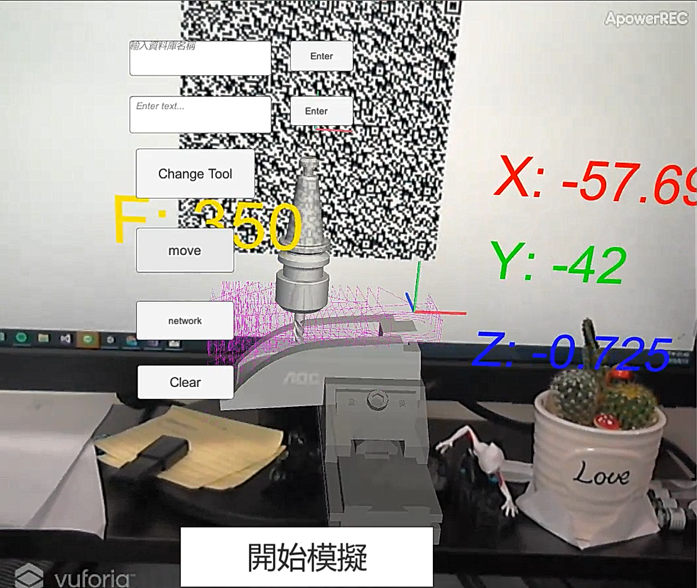
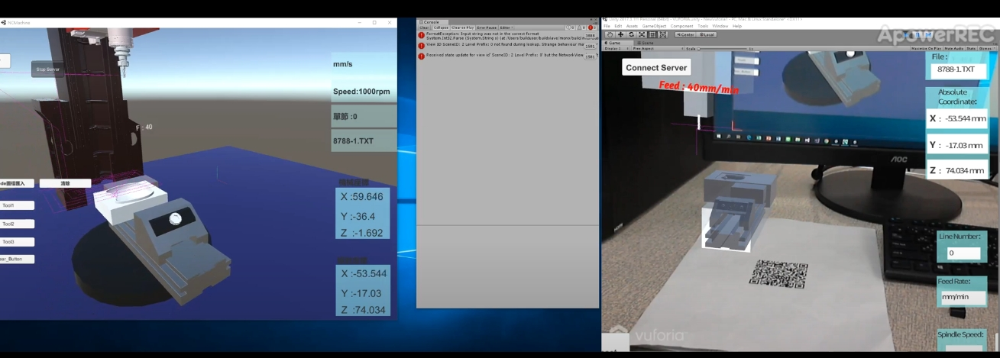
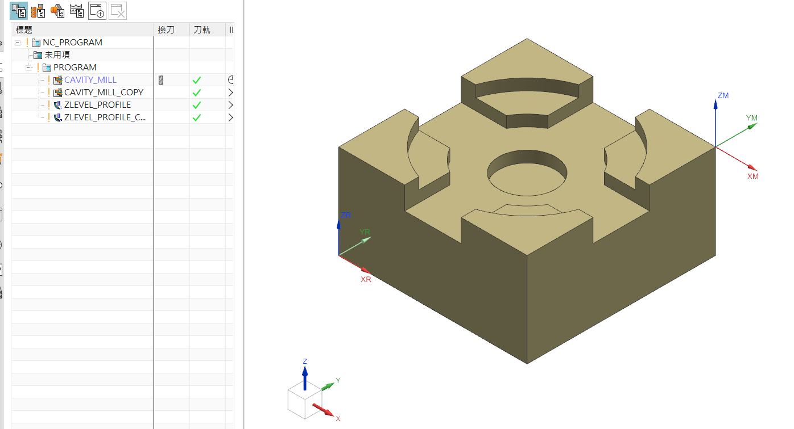
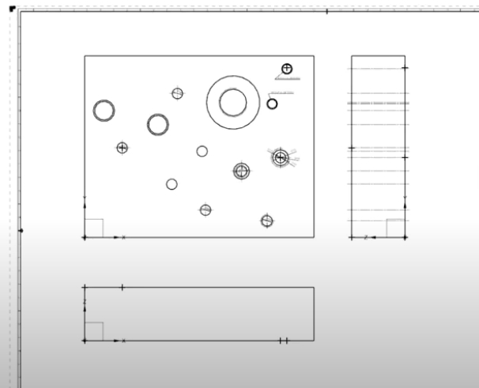
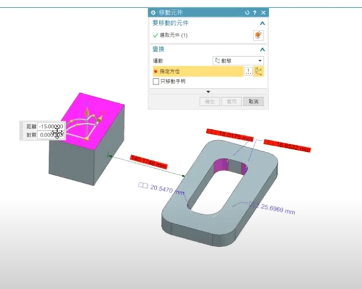
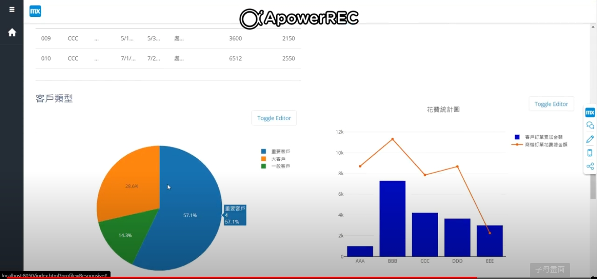
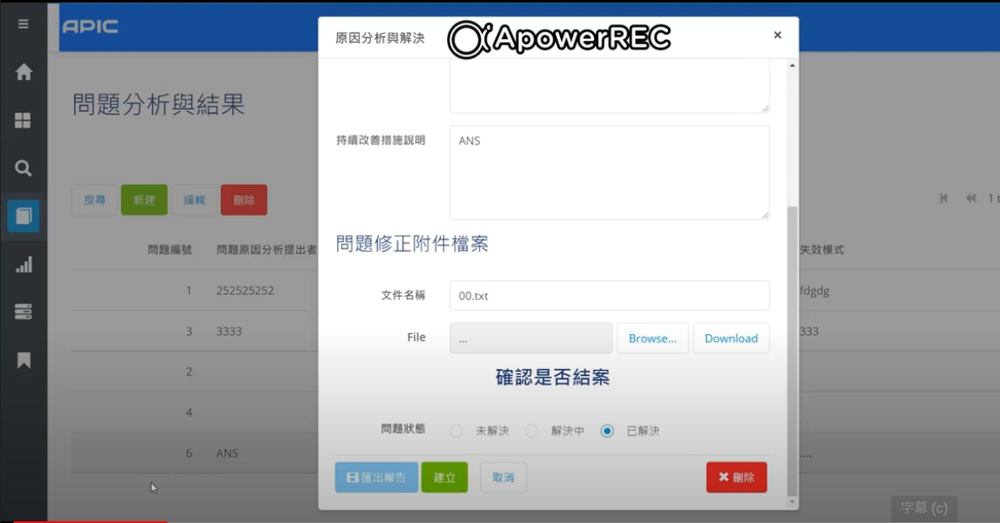
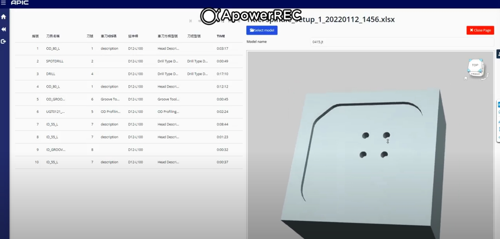

About Me
-
CNC Machine
Simulation of Cutting Path Using AR
使用Unity C#做開發，建構虛擬刀具路徑模擬，透過連接外部資料庫MySQL的結合，將路徑檔案與模型檔匯入至資料庫中。
進行刀具模擬時，可透過手持裝置鏡頭掃描條碼，即可呼叫所需資料進行模擬。
 -
Remotion CNC Control Information
使用Unity C#做開發串聯SkyMars API 透過網路配置連接至加工機機台控制器，即時將控制器資料傳遞至電腦伺服器中。 而伺服器端則透過TCP/IP的方式傳送數據至用戶端，透過這種方式來達到同步虛實整合的效果。
 -
Secondary Development: Siemens NX CAD/CAM
自動組裝模擬與量測間隙報告
專案以自行車裝配為例:以WinForm建立管理零件表資料並彙整成XML。在建立組裝模擬時，由XML來取得零件相關檔案路徑並且匯入零件檔進行裝配。 最後透過定義好的零件屬性於NX內進行量測，並藉由CheckMate進行檢驗標準的作業。 後續增加了能夠自動產出相關零件的檢驗報告，將每一個量測的零件距離彙整成Excel表。當裝配模擬檢驗未通過標準時，報告會特別標示出不通過項目以便於可讀性。
-
自動加工工序表單
客製化設計加工工序表單，提取相關加工參數並輸出至Excel中，提高CAM生產效率。
 -
自動長度與圓孔螺紋資訊標註
建立圖面圓孔特徵的自動標註流程並建立孔特徵表，提高繪圖的作業效率。
 -
量測檢測檢查報告呈現
以 Knowledge Fusion(KF) 撰寫客製化檢測標準，並透過CheckMate與requirement validation進行即時標準檢驗。
 -
Web Application : Siemens Mendix
業務管理財報與圖表
簡易業績損益表單，並以圖表方式呈現
 -
問題表單提報系統
現場人員與設計部間的問題單呈報系統，以簡易的UI介面描述問題也可上傳拍攝圖片。
問題單可指定部門解決該問題，而當問題解決時，系統會記錄當下時間並標示下來該問題解決的狀態。
 -
CAM工序表單與3D模型整合
透過Web架構，為現場作業系統上顯示預加工工件工序表單與3D模型
